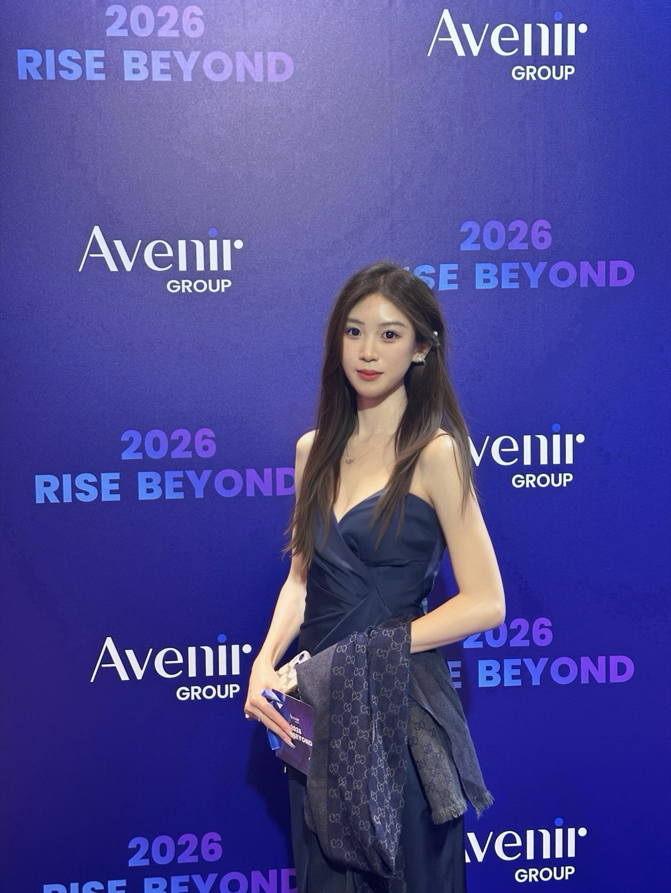

香港中文大学（深圳）
金融科技硕士金融科技 · 深圳
PERSONAL PORTFOLIO — 01
Product Manager · Project Manager
本科毕业于华南师范大学人工智能专业，目前在香港中文大学(深圳)攻读金融科技硕士。
我曾在智能驾驶（Momenta）、消费科技（徕芬）和金融科技（Avenir Group）团队参与产品设计、数字化建设与项目交付，也在实际工作中使用 AI 改进处理问题的方式。
EXPERIENCE — 02
滚动页面，查看我在学习与产品实践中的成长轨迹。
金融科技 · 深圳

独立推进智能盯盘，从调研、原型与 PRD 到测试验收。
参与 VIP 分层及订单簿流动性、API 调研。
推进文印系统上线，并协同搭建 AI 服务台。
协助车型功能集交付，跟进车辆资源与问题响应。
人工智能 · 广州
AI WORKS — 03
遇到实际问题时，我会用 AI 提升处理效率，并探索将可行的想法做成小工具或产品。
CASE STUDIES / IN PROGRESS
后续会逐个补充问题背景、AI 的参与方式，以及工具或产品带来的变化。
SELECTED PROJECTS — 03
这里收录较完整的产品项目，呈现我如何理解需求、设计体验并推动方案落地。
01 / AI COMPANION PRODUCT
面向青少年的桌面陪伴助手，负责用户研究、产品策略、功能规划、UI/UX 设计与版本发布。围绕 AI 对话、情绪追踪、生活提醒与游戏化体验，设计多模态陪伴方案。
02 / E-COMMERCE PRODUCT
面向 50–65 岁互联网新移民打造适老化社交电商平台，基于 200+ 用户访谈梳理 6 大痛点并用 RICE 排序；主导首页导购设计和适老化交互规范，完成 Figma 原型并参与 Vue 前端开发。
更多项目过程材料会在整理完成后补充。
WRITING & NOTES — 04
文章与项目复盘会在整理完成后放在这里。
之后会分享产品实践、项目复盘与学习中的观察。